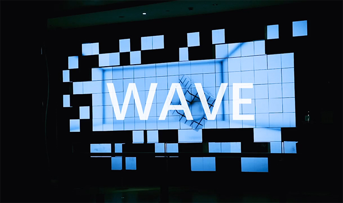
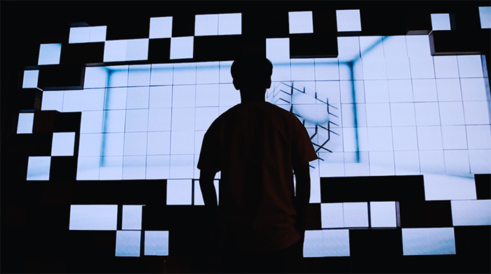
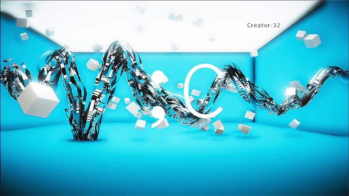
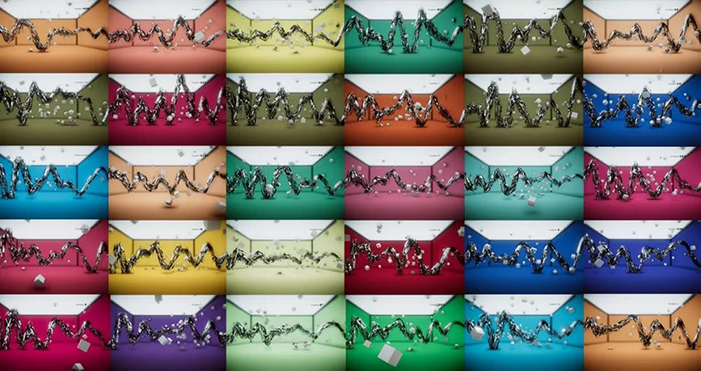

Works
>>
Back
WAVE
# 广州K11
你可以把WAVE想象成一个处于沉睡的生物，需要给予心跳来激活WAVE，透过它的张牙舞爪来看见/听见自己的心跳。探索自身心率波谱的可能性，并在与WAVE的互动中创作属于自己独一无二的PULSE ART。
矩阵墙由85块可独立运动的LED屏幕组成，每块模组都可独立运动，在感应到体验者的实时心率后将心率波谱通过运动速度、运动模式进行还原演绎波长与频率。WAVE装置将只有在国际舞台上露面的精密机械装置，以艺术有趣的交互方式带入了大众视野。
   
主创团队：
；c（分号C）：生成视觉设计/交互设计/动态设计/传感器通信
K11（广州）
BoringMedia Lab（上海媒趣智能）：总工程/机械设计/云端技术/设计与UX
Nencol（音乐人）：声效配乐设计
特别感谢：
KENNY